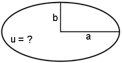

Berechnung des Umfanges einer Ellipse mit Näherungsformel
Wie gross ist der Umfang u einer Ellipse mit den Halbachsen a und b ?

Für das (elliptische) Integral u = \(\sf 4\int\limits_0^{\pi/2}\sqrt{a^2 sin^2 t + b^2 cos^2 t}\: dt\: \) gibt es keine exakte Lösung.
Nach Klick auf 'Go' wird der Umfang gemäss der Näherungsformel von Ramanujan berechnet:
u ≈ \(\sf (a+b)\cdot\pi\cdot(1+{\dfrac{3\lambda^2} {10+\sqrt{4-3\lambda^2}}})\: \),
\(\sf \:\lambda = {\dfrac{\sf a-b} {\sf a+b}} \)
- Halbachse a:
- Halbachse b:
Resultat
Falls Sie den Umfang beliebig genau berechnen wollen, so gehen Sie zum Programm numerische Integration. Dort können Sie auch die Bogenlänge eines Teils einer Ellipse berechnen.
©1997 - 2026 www.mathematik.ch |🔍